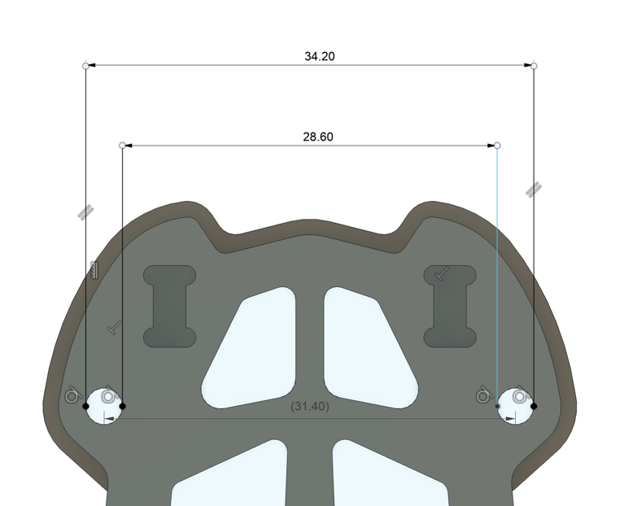
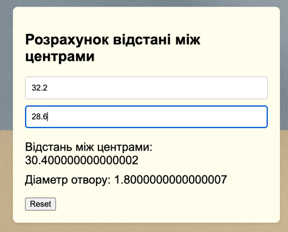

Розрахунок відстані між центрами
Збережені результати
| Дата/Час | Val1 | Val2 | ⇔ мм | ⌀ мм |
|---|
Інструкція користування
Крок 1: Штангенциркулем виміряйте відстані між найближчими і найдальшими стінками отворів.
Примітка: Міряйте саме отвори, а не стійки. Інакше може бути досить велика похибка.

Примітка: Ставте штангенциркуль в отвори перпендикулярно. Для дальніх стінок шукайте
максимальне значення, для ближніх - мінімальне. Але не тисність занадто сильно, щоб не отримати не коректні
значення. Значення не округлюйте на цьому етапі.
Крок 2: Введіть значення у поля форми. Калькулятор автоматично розрахує відстань між центрами отворів та
діаметр проміжного отвору.
Результати відображатимуться під полями вводу.

Примітка: Введіть числові значення у міліметрах. Калькулятор працює з додатними та
відʼємними числами в будь-якому порядку.
Mark4 V2
Back:
Width: 19mm
Height: 35mm
Front:
Width: 31.5mm
Height: 35mm
Manta 10
Back:
Width: 34mm
Height: 25mm
Front:
Width: 36.5mm
Height: 25mm
XL10 V7
Back:
Width: 25.1 ?mm
Height: 35mm
Front:
Width: 32mm
Height: 35mm